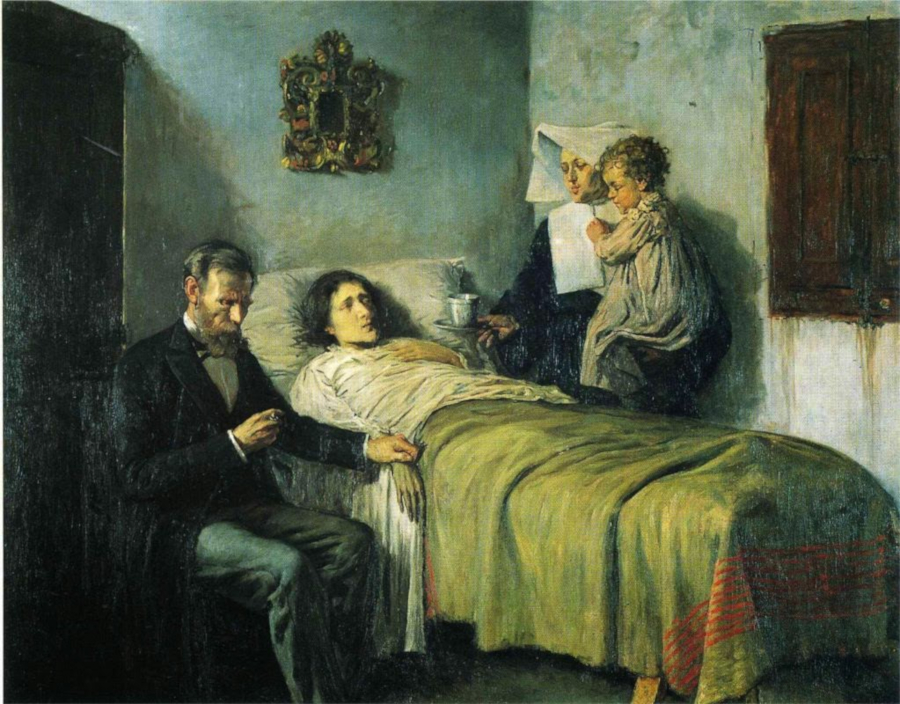
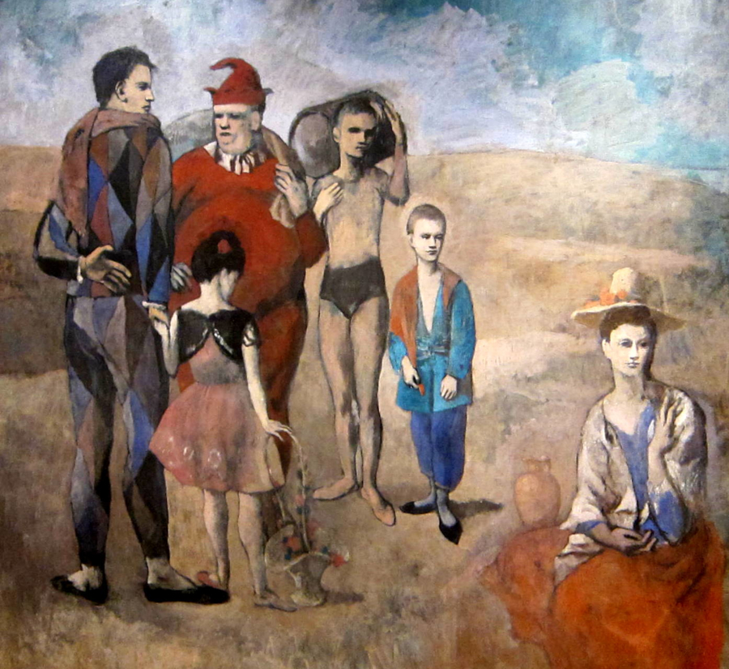
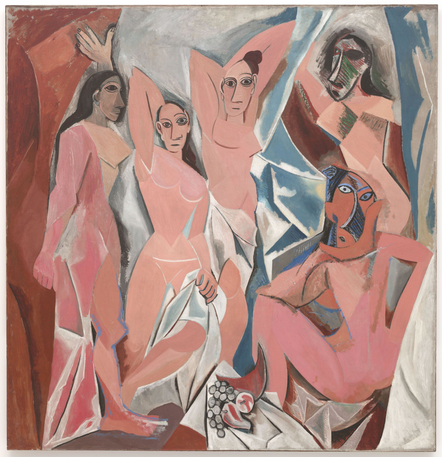
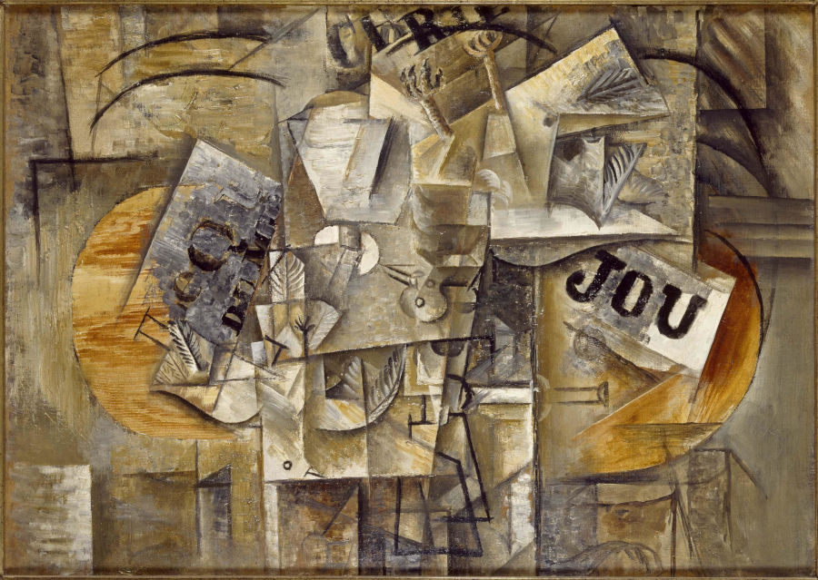

Pablo Picasso
Pintor español, la trascendencia de Picasso no se agota en la fundación del cubismo, revolucionaria tendencia que rompió definitivamente con la representación tradicional al liquidar la perspectiva y el punto de vista único.Pablo Picasso exploró incesantemente nuevos caminos e influyó en todas la facetas del arte del siglo XX, encarnando como ningún otro la inquietud y receptividad del artista contemporáneo.Su total entrega a la labor creadora y su personalidad vitalista, por otra parte, nunca lo alejarían de los problemas de su tiempo; una de sus obras maestras, el Guernica (1937), es la mejor ilustración de su condición de artista comprometido, sus obras mas populares son:
Ciencia y caridad

La habitacion azul

Familia de saltimbanuis

Les demoiselles d’Avignon

Les oiseaux morts

Menu